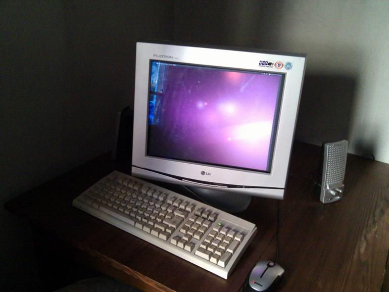

Linux viešosiose vietose
Ar jums teko matyti Linux, naudojamus viešosiose vietose? Jei taip, prašau nepasididžiuoti ir pasidalinkite informacija ar vaizdine medžiaga, jei tokią turite.
Žemiau pateikiu visų Linux panaudojimo viešose vietose atvejų rinkinį.
Mint Vinetu¶
Mint Vinetu yra neįprastas knygynas arba jauki vieta, kur galima pigiau įsigyti rekomenduojamas knygas, skaityti gurkšnojant mėtų arbatą ar priduoti perskaitytas knygas, nes dalintis yra džiaugsmas.
Jei dar ten nebuvote, siūlau apsilankyti.
{kind=link}
Ubuntu šioje vietoje naudojamas kompiuteryje, kuriuo gali naudotis knygyno lankytojai.
Fotoservisas¶
Fotoservisas yra internetinė foto laboratorija, kurioje internetu galite užsisakyti nuotraukų gaminimą ir atsiimti artimiausiame salone pagamintas nuotraukas popieriniame variante.
Ubuntu šioje vietoje naudojamas kompiuteryje, kuris skirtas nuotraukų peržiūrai prieš spausdinant, kad būtų galimybė atsirinkti kurias nuotraukas norite spausdinti. Kadangi yra nemaža tikimybė, kad kai kurie lankytojai prie to kompiuterio prijungs laikmenas užkrėstas virusais, tai Ubuntu, būdamas atsparus kompiuteriniams virusams puikiai gelbsti.